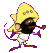

netstrike for zapata
29.01.1998
netstrike for zapata
29.01.1998
Strano Network aderisce all'iniziativa organizzata da un'organizzazione senza-volto
della Rete - Anonymous Digital Coalition - riportata nel seguente comunicato
invitando tutte le soggettivita' ed i collettivi presenti in Rete che sono sensibili ai
concetti di solidarieta', liberta' ed uguaglianza ad occupare il giorno 29/01/98
dalle ore 4.00 pm GMT alle ore 5.00 pm GMT i seguenti 5 siti:
Bolsa Mexicana de Valores www.bmv.com.mx
Grupo Financiero Bital www.bital.com.mx
Grupo Financiero Bancomer www.bancomer.com.mx
Banco de Mexico www.banxico.org.mx
Banamex www.banamex.com
simbolo del neoliberismo messicano e globale
[n.d.r. uno dei siti e' rimasto bloccato per l'ora di mobilitazione e un altro e'
risultato inservibile anche per le 48 ore successive!]
Per maggiori informazioni: iscriviti alla specifica m-l su autistici
- Prossimi netstrikes!
- Netstrike - come partecipare?
- Netstrike - come organizzarlo?
- Vademecum Legale
- I netstrikes realizzati finora

sito precedentemente ospitato da Isole nella Rete